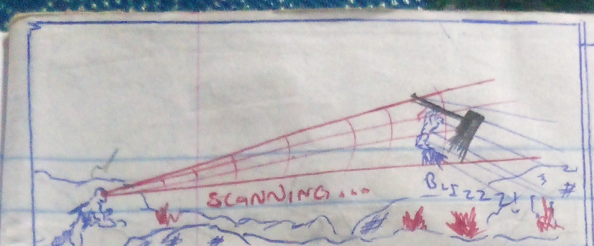
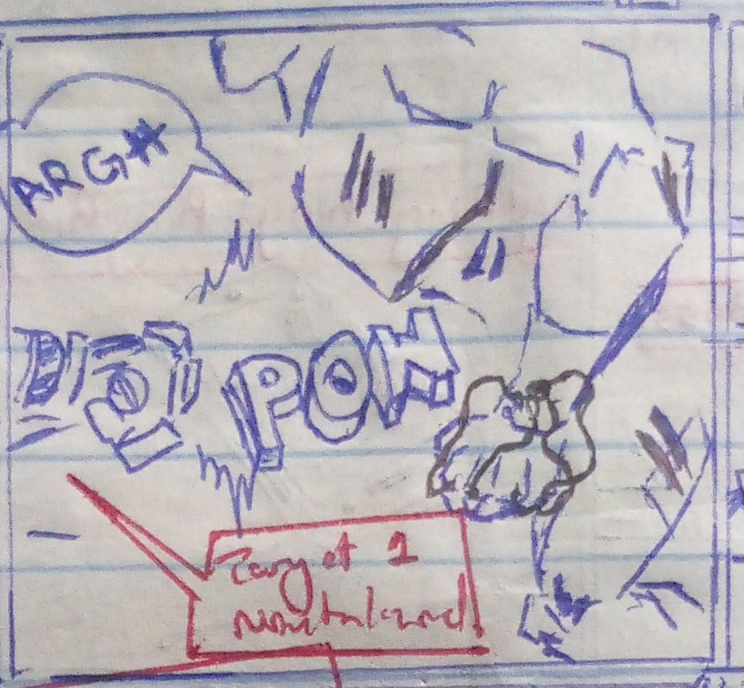
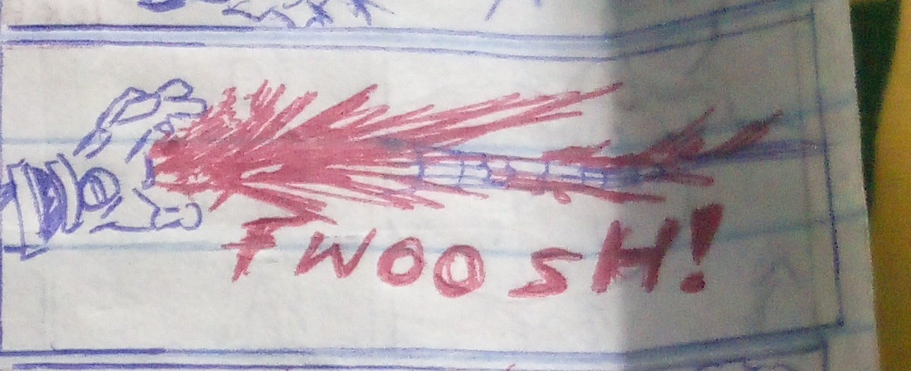
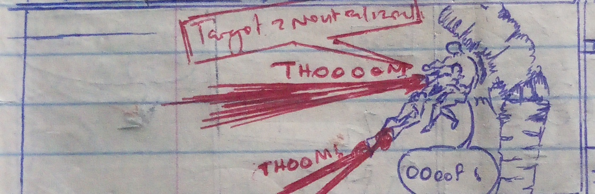

Four real panels from a student's exercise book — scanned, then animated with plain HTML, CSS, and JavaScript. Scroll down, or hit play.




The panel grid itself: each comic panel is just a <div class="panel">
holding an image. Structure first — a comic page is a grid, and a grid is
exactly what HTML is for.
The "hand-drawn" feel: panel borders, the slight rotation on each panel, the notebook-paper background, and the punchy sound-effect typography (the red outlined "POW!" text) are all CSS — no drawing tool needed.
The "alive" part: JS watches when each panel scrolls into view and triggers its reveal + sound-effect animation, and the shake effect on impact panels. This is the same skill as game feedback/juice — timing, triggers, feel.